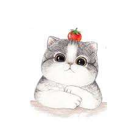
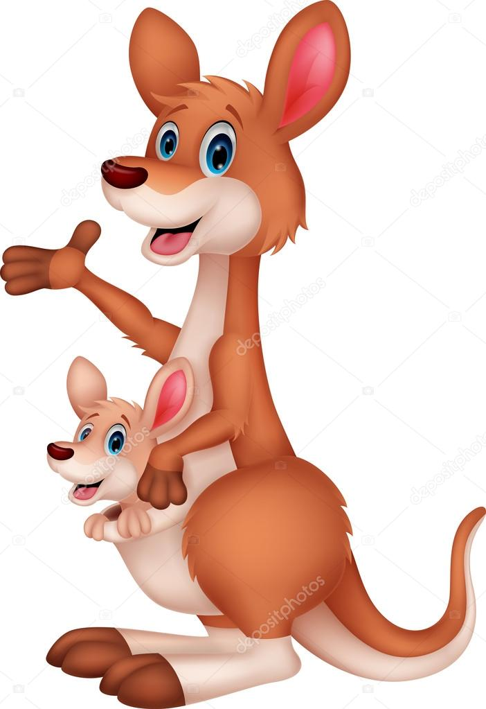
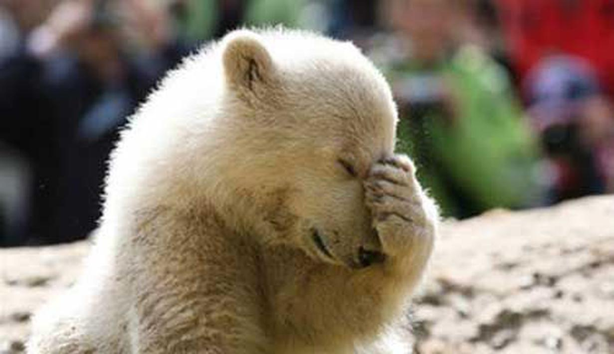

Nama: Devi Andini Febrianti
Alamat: Dsn. Depok Ds. Pelas Kec. Kras Kab. Kediri
Tempat Tanggal Lahir: 28 Februari 2003
Artikel Kucing
Kucing disebut juga kucing domestik atau kucing rumah (nama ilmiah: Felis silvestris catus atau Felis catus) adalah sejenis mamalia karnivora dari keluarga Felidae. Kata "kucing" biasanya merujuk kepada "kucing" yang telah dijinakkan, tetapi bisa juga merujuk kepada "kucing besar" seperti singa dan harimau.
Kucing telah berbaur dengan kehidupan manusia paling tidak sejak 5.000 tahun SM, dengan ditemukannya kerangka kucing di Pulau Siprus. Sejak zaman 3.500 SM, orang Mesir Kuno telah menggunakan kucing untuk menjauhkan tikus atau hewan pengerat lain dari lumbung yang menyimpan hasil panen.
Saat ini, kucing adalah salah satu hewan peliharaan terpopuler di dunia. Kucing yang garis keturunannya tercatat secara resmi sebagai kucing trah atau galur murni (pure breed), seperti persia, siam, manx, dan sphinx. Kucing seperti ini biasanya dibiakkan di tempat pemeliharaan hewan resmi. Jumlah kucing ras hanyalah 1% dari seluruh kucing di dunia, sisanya adalah kucing dengan keturunan campuran seperti kucing liar atau kucing kampung.
Artikel Kanguru
Kanguru (atau kangguru) adalah hewan mamalia yang memiliki kantung (marsupialia). Hewan ini termasuk hewan khas Australia. Kata kanguru diambil dari bahasa Aborigin gangguru.
Ada tiga spesies kanguru:
Kanguru Merah adalah hewan marsupial terbesar yang masih hidup. Apabila berdiri tingginya dapat mencapai lebih dari 2 meter dan bobotnya mencapai 90 kg. Kanguru jenis ini biasanya bergerak dalam kelompok besar. Mereka tidur di kala siang yang hawanya paling panas. Apabila tidak ada air, mereka akan mencari kelembapan dari tumbuhan hijau. Mereka juga hanya akan berkembang biak apabila ada hujan dan tumbuh tanaman baru.
Kanguru Abu-abu Timur dapat ditemukan di daerah subur Australia bagian timur.
Kanguru Abu-abu Barat dapat ditemukan di Australia bagian barat, Australia bagian selatan yang dekat dengan pantai dan basin Sungai Darling. Kanguru Abu-abu sangat banyak jumlahnya. Mereka hidup di hutan-hutan eukaliptus yang terbuka dan di daerah berumput. Mereka memakan rumput.
Artikel Beruang
Beruang adalah binatang buas jenis Ursus, berbulu tebal, dapat berdiri di atas kedua kakinya, bercakar, dan bermoncong panjang. Dalam nama ilmiahnya Ursidae. Ursidae sendiri berasal dari dua kata yaitu ursus dan idae. Ursus berasal dari bahasa latin ursus yang berarti beruang, dan idae berasal dari bahasa Yunani kuno Eidos (bahasa Yunani).
Beruang memiliki indra penciuman dan pendengaran yang ulung, bertelinga bundar, berekor kecil, berbulu yang panjang, lebat dan kasar, Mereka memiliki cakar yang lebar dan berjumlah lima pada telapak tangan yang tak dapat ditarik masuk. Cakar-cakarnya digunakan untuk menyobek, menggali, dan menangkap. Pengelihatan beruang hampir sama dengan pengelihatan manusia. Beruang hitam dan sejenisnya tidak buta warna.[butuh rujukan]
Bermoncong yang panjang. Giginya digunakan untuk bertahan dan alat dan tergantung pada makanannya. Jumlah gigi berfariasi tergantung pada spesiesnya, beruang dapat memiliki 32 hingga 42 gigi. Susunan Gigi beruang tidak dikhususkan untuk membunuh mangsa mereka, karena gigi taring beruang relatif kecil dan umumnya digunakan untuk pertahanan diri atau alat. Bentuk gigi geraham beruang itu cukup lebar dan datar, gigi tersebut digunakan untuk memotong dan mengkunyah tumbuhan menjadi potongan lebih kecil supaya dapat dicerna.
Pada semua spesies beruang, ukuran jantan lebih besar daripada betina (yang masih dalam spesies yang sama). Perbedaan antar jenis kelamin ini, semakin besar pada spesies yang lebih besar. Beruang kutub jantan berbobot dua kali lebih besar daripada betinanya, sedangkan pejantan pada spesies beruang yang lebih kecil berbobot hampir sama dengan betinanya. Beruang dapat hidup sekitar 25 tahun hingga 40 tahun.Ada banyak macam beruang yang berbeda seperti beruang kutub, beruang cokelat, beruang hitam, panda, dsb.